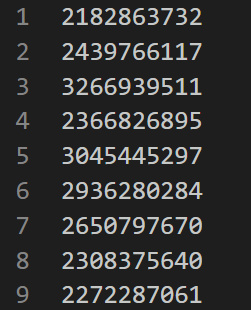
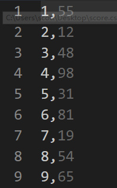
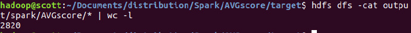
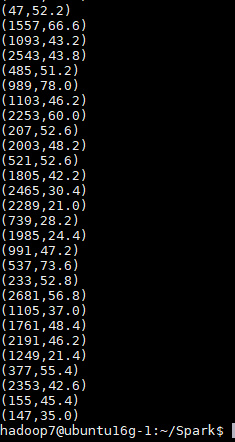
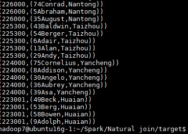
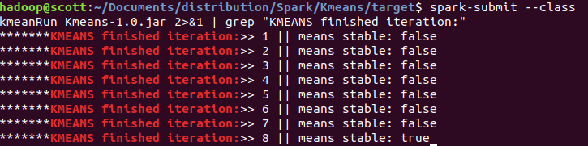
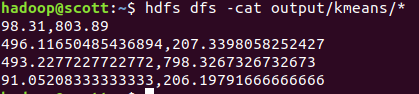
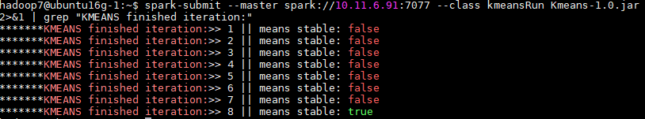
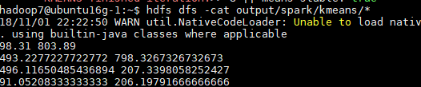

Map
班级学生成绩的随机生成
- 输入：本班同学的学号
- 输出：<学号，成绩>
数据准备
首先需要一个
stuID.csv文件，每一列为一个学号：- 
然后将文件放入
HDFS中：hdfs dfs put stuID.csv input
编写程序
import org.apache.spark.SparkConf;
import org.apache.spark.api.java.*;
import org.apache.spark.api.java.function.Function;
import java.util.ArrayList;
import java.util.List;
import java.util.Random;
public class StuScore {
private static Random rand = new Random();
public static void main(String[] args) {
SparkConf conf = new SparkConf().setAppName("StuScore");
JavaSparkContext sc = new JavaSparkContext(conf);
String logFile = "hdfs:///user/hadoop/input/stuID.csv";
JavaRDD<String> stuID = sc.textFile(logFile);
JavaRDD<String> stuScore = stuID.map(
new Function<String, String>() {
@Override
public String call(String s) throws Exception {
String tmp = s + " " + String.valueOf( rand.nextInt(100) +1);
return tmp;
}
}
);
stuScore.saveAsTextFile("hdfs:///user/hadoop/output/spark/StuRandomScore");
}
}
注意点
- 注意在用Spark连接HDFS时，需要指明完整路径，如
/user/hadoop，不能像hadoop一样省略。 - 使用
map函数将其transform到另一个RDD是常用的操作方式。
运行
本地运行
首先确保已经打开了HDFS，在target目录下，提交作业：
spark-submit --class StuScore StuScore-1.0.jar
查看结果
hdfs dfs -cat output/spark/StuRandomScore/*
集群上运行
同样，需要将HDFS地址更改为集群的地址，例如：
hdfs:///user/hadoop/input/stuID.csv => hdfs://10.11.6.91:9000/user/hadoop7/input/stuID.csv
提交作业并运行：
spark-submit --class StuScore StuScore-1.0.jar
查看运行结果
hdfs dfs -cat output/spark/StuRandomScore/*
reduceByKey
问题
求平均成绩：将全班同学每隔5号分为一组，求每组的平均成绩
输入： <学号，成绩>
输出：<组号，平均分>
数据准备
首先需要一个
score.csv文件，每一列为学号和学生成绩：- 
然后将文件放入
HDFS中：hdfs dfs put score.csv input
编写程序
import org.apache.spark.SparkConf;
import org.apache.spark.api.java.*;
import org.apache.spark.api.java.function.Function;
import org.apache.spark.api.java.function.Function2;
import org.apache.spark.api.java.function.PairFunction;
import scala.Tuple2;
import java.util.Iterator;
import java.util.Random;
public class AVGScore {
private static Integer groupSize = 5;
public static void main(String[] args) {
SparkConf conf = new SparkConf().setAppName("AVGScore");
JavaSparkContext sc = new JavaSparkContext(conf);
sc.setLogLevel("WARN"); //http://stackoverflow.com/questions/27781187/how-to-stop-messages-displaying-on-spark-console
String logFile = "hdfs:///user/hadoop/input/score.csv";
JavaRDD<String> fileRDD = sc.textFile(logFile);
/**
* map string to (id, score) and convert to (group_id, (score,1))
* reduceByKey => (group_id,(sumScore, count)
* and then mapValues to avg score
*/
JavaPairRDD<Integer, Double> stuScore = fileRDD.mapToPair(
line -> new Tuple2<>(
(Integer.parseInt(line.split(",")[0]) + 1 )/5, new Tuple2<>(Double.parseDouble(line.split(",")[1]),1)))
.reduceByKey(
(x,y) -> new Tuple2<>(x._1 + y._1,x._2+y._2))
.mapValues(x -> x._1/x._2);
stuScore.saveAsTextFile("hdfs:///user/hadoop/output/spark/AVGscore");
}
}
//参考 : https://blog.csdn.net/gx304419380/article/details/79455833
注意点
- 求平均值有很多种方法，这里选择的是reduceByKey，效率较高，更多方法参考这里。
- 多使用Lambda函数，简单直观。
运行
本地运行
运行程序
spark-submit --class AVGScore AVGScore-1.0.jar
查看结果，同时查看行号：
hdfs dfs -cat output/spark/AVGscore/* | wc -l

集群上运行
需要将HDFS地址更改为集群的地址，例如：
hdfs:///user/hadoop/input/score.csv => hdfs://10.11.6.91:9000/user/hadoop7/input/score.csv
提交作业并运行：
spark-submit --master spark://10.11.6.91:7077 --class AVGScore AVGScore-1.0.jar
查看结果
hdfs dfs -cat output/spark/AVGscore/*

Natural join
数据准备
有两个文件
person.txt
1 Aaron 210000
2 Abbott 214000 3 Abel 221000 4 Abner 215000 5 Abraham 226000 6 Adair 225300 7 Adam 223800 8 Addison 224000 9 Adolph 223001
address.txt
210000 Nanjing 214000 Wuxi 221000 Xuzhou 213000 Changzhou
要求以code为连接属性，匹配出person中每个人所在的位置信息；每条记录各个字段之间以空格为分隔符。
编写程序
import org.apache.commons.lang.StringUtils;
import org.apache.hadoop.hdfs.protocol.DirectoryListing;
import org.apache.spark.SparkConf;
import org.apache.spark.api.java.JavaPairRDD;
import org.apache.spark.api.java.JavaRDD;
import org.apache.spark.api.java.JavaSparkContext;
import org.apache.spark.api.java.function.Function;
import org.apache.spark.api.java.function.PairFunction;
import scala.Tuple2;
public class NaturalJoin {
public static void main(String args[]) {
SparkConf conf = new SparkConf().setAppName("NaturalJoin");
JavaSparkContext sc = new JavaSparkContext(conf);
sc.setLogLevel("WARN"); //http://stackoverflow.com/questions/27781187/how-to-stop-messages-displaying-on-spark-console
String addFile = "hdfs:///user/hadoop/input/address.txt";
String personFile = "hdfs:///user/hadoop/input/person.txt";
/***
* return code,city
*/
JavaPairRDD<Integer, String> addRDD = sc.textFile(addFile).mapToPair(
line -> new Tuple2<>(
Integer.parseInt(line.split(" ")[0]), line.split(" ")[1]));
/**
* return return code,{ id + name }
*/
JavaPairRDD<Integer, String> personRDD = sc.textFile(personFile).mapToPair(
new PairFunction<String, Integer, String>() {
@Override
public Tuple2<Integer, String> call(String s) throws Exception {
String[] splitLines = StringUtils.split(s, " ");
if (splitLines.length < 3)
return null;
return new Tuple2<>(Integer.parseInt(splitLines[2]), splitLines[0] + splitLines[1]);
}
}
);
/**
* return code, [{id + name}, city]
*/
JavaPairRDD<Integer, Tuple2<String,String>> resultRDD = personRDD.join(addRDD);
resultRDD.saveAsTextFile("hdfs:///user/hadoop/output/spark/NaturalJoin");
}
}
注意点
- 本操作比较繁琐，需要先生成
JavaPairRDD，再使用Join，未来可以尝试使用DataFrame执行。
运行
本地运行
运行程序并查看结果
spark-submit --class NaturalJoin NaturalJoin-1.0.jar
hdfs dfs -cat output/spark/NaturalJoin/*
集群上运行
需要将HDFS地址更改为集群的地址，例如：
hdfs:///user/hadoop/input/address.txt => hdfs://10.11.6.91:9000/user/hadoop7/input/address.txt
提交作业并运行：
spark-submit --master spark://10.11.6.91:7077 --class NaturalJoin NaturalJoin-1.0.jar
查看结果
hdfs dfs -cat output/spark/NaturalJoin/*

Kmeans
数据准备
输入数据（k-means.dat）：
4,400 96,826 606,776 474,866 400,768 2,920 356,766 36,687 -26,824
- 第一行标明K的值和数据个数N, 均为整形, 由","隔开 (如 3,10 表示K=3, N=10)。
- 之后N行中每行代表一个二维向量, 向量元素均为整形, 由","隔开 (如 1,2 表示向量(1, 2))。
输出: K行, 每行是一个聚类图心的二维向量, 向量元素均为浮点型 (如 1.1,2.3)。
编写程序
Kmeans.java
import org.apache.spark.api.java.JavaPairRDD;
import org.apache.spark.api.java.JavaRDD;
import org.apache.spark.api.java.JavaSparkContext;
import org.apache.spark.api.java.function.Function2;
import scala.Serializable;
import scala.Tuple2;
import java.util.ArrayList;
import java.util.List;
public class Kmeans implements KmeansInterface, Serializable {
// every point has a cluster number and point(x,y)
private List<Tuple2<Integer, Point>> oldCenterList = new ArrayList<>();
private List<Tuple2<Integer, Point>> newCenterList = new ArrayList<>();
private double threshold = 0.000001;
/**
* @param point
* @return cluster belonged
* @Method get the closest cluster for the point
*/
public int findClosest(Point point) {
int argmin = -1;
double minimalDistance = Double.MAX_VALUE;
for (Tuple2<Integer, Point> i : oldCenterList) {
double distance = point.EuclideanDis(i._2);
if (distance < minimalDistance) {
minimalDistance = distance;
argmin = i._1;
}
}
return argmin;
}
/**
* @param outFile string
* @Method save center to txt
*/
public void saveToFile(String outFile, JavaSparkContext sc) {
List<String> outCenterList = new ArrayList<>();
// format center points
for (Tuple2<Integer, Point> tmp : newCenterList) {
outCenterList.add(String.valueOf(tmp._2.getX()) + " " + String.valueOf(tmp._2.getY()));
}
JavaRDD<String> center = sc.parallelize(outCenterList);
center.saveAsTextFile(outFile);
}
/**
* @return False for not stable
* @Method compare two cluster center with threshold
*/
public boolean clusterCompare() {
for (Tuple2<Integer, Point> oldCenter : oldCenterList) {
int clusterNum = oldCenter._1;
for (Tuple2<Integer, Point> newCenter : newCenterList) {
if (newCenter._1 == clusterNum) {
double dis = oldCenter._2.EuclideanDis(newCenter._2);
if (dis > threshold)
return false;
break;
}
}
}
return true;
}
/**
* @param kmeansRDD
* @return init pointsRDD
* @Method prepare Points RDD and select clusters randomly
*/
public JavaPairRDD<Integer, Point> Prepare(JavaRDD<String> kmeansRDD) {
// get the number of cluster
String fisrtLine = kmeansRDD.first();
int clusterCount = Integer.parseInt(fisrtLine.split(",")[0]);
// filter first line and convert to <Point,clusternum>, init set all cluster number 1
JavaPairRDD<Integer, Point> pointsRDD = kmeansRDD.filter(line -> !line.equals(fisrtLine)).mapToPair(
line -> {
String[] splitLine = line.split(",");
double X = Double.parseDouble(splitLine[0]);
double Y = Double.parseDouble(splitLine[1]);
return new Tuple2<>(0, new Point(X, Y));
}
);
// init center list
oldCenterList.addAll(pointsRDD.take(clusterCount));
for (int i = 0; i < clusterCount; i++) {
Tuple2<Integer, Point> tmp = oldCenterList.get(i);
oldCenterList.set(i, new Tuple2<>(i, tmp._2));
}
newCenterList.addAll(oldCenterList);
return pointsRDD;
}
/**
* @param pointsRDD to cluster
* @return new classify PointsRDD
* @method cluster and update new cluster center
*/
public JavaPairRDD<Integer, Point> cluster(JavaPairRDD<Integer, Point> pointsRDD) {
JavaPairRDD<Integer, Point> newPointsRDD = pointsRDD.mapToPair(
kv -> new Tuple2<>(findClosest(kv._2), kv._2)
);
JavaPairRDD<Integer, Point> newClusterRDD = newPointsRDD
.mapValues(
value -> new Tuple2<>(value, 1))
.reduceByKey(
new Function2<Tuple2<Point, Integer>, Tuple2<Point, Integer>, Tuple2<Point, Integer>>() {
@Override
public Tuple2<Point, Integer> call(Tuple2<Point, Integer> value1, Tuple2<Point, Integer> value2) throws Exception {
Point tmp = new Point(value1._1.getX() + value2._1.getX(), value1._1.getY() + value2._1.getY());
int count = value1._2 + value2._2;
return new Tuple2<>(tmp, count);
}
}
).mapValues(
v -> new Point(v._1.getX() / v._2, v._1.getY() / v._2)
);
oldCenterList.clear();
oldCenterList.addAll(newCenterList);
// convert to list to store
newCenterList.clear();
newCenterList.addAll(newClusterRDD.collect());
return newPointsRDD;
}
}
kmeansRun.java
import org.apache.spark.SparkConf;
import org.apache.spark.api.java.JavaPairRDD;
import org.apache.spark.api.java.JavaRDD;
import org.apache.spark.api.java.JavaSparkContext;
import scala.Tuple2;
import java.util.ArrayList;
import java.util.List;
public class kmeansRun {
public static void main(String args[]) {
Kmeans kmeans = new Kmeans();
SparkConf conf = new SparkConf().setAppName("Kmeans");
JavaSparkContext sc = new JavaSparkContext(conf);
String kmeansFile = "hdfs://10.11.6.91:9000/user/hadoop7/input/k-means.dat";
String outFile = "hdfs://10.11.6.91:9000/user/hadoop7/output/spark/kmeans";
int counter = 1, maxIteration = 500;
boolean result = false;
JavaRDD<String> kmeansRDD = sc.textFile(kmeansFile).cache();
// init centerList and Points RDD
JavaPairRDD<Integer, Point> PointsRDD = kmeans.Prepare(kmeansRDD);
while (!result && counter < maxIteration) {
PointsRDD = kmeans.cluster(PointsRDD);
result = kmeans.clusterCompare();
System.out.println("*******KMEANS finished iteration:>> " + counter + " || means stable: " + result);
counter++;
}
kmeans.saveToFile(outFile,sc);
}
}
注意事项
- 将类成员函数的声明和定义分开写，用interface来定义抽象函数。
- 在循环过程中，虽然变量名没有改变，但只是指向那一个RDD，而每次循环RDD都在变化。
运行
本地运行
运行程序
spark-submit --class kmeansRun Kmeans-1.0.jar 2>&1 | grep "KMEANS finished iteration:"

查看结果
hdfs dfs -cat output/spark/kmeans/*

集群上运行
需要将HDFS地址更改为集群的地址，例如：
hdfs:///user/hadoop/input/k-means.dat => hdfs://10.11.6.91:9000/user/hadoop7/input/k-means.dat
提交作业并运行：
spark-submit --master spark://10.11.6.91:7077 --class kmeansRun Kmeans-1.0.jar 2>&1 | grep "KMEANS finished iteration:"

查看结果：
